Veronica Dahl
Logic and Functional Programming Group
School of Computing Science
Simon Fraser University
Burnaby, B.C. Canada V5A 1S6
veronica@cs.sfu.ca
Paul Tarau
Université de Moncton
Département d'Informatique
Moncton, N.B. Canada E1A 3E9,
tarau@info.umoncton.ca
Abstract
A general framework of handling state information for logic programming languages on top of backtrackable assumptions (linear affine and intuitionistic implications ranging over the current continuation) is introduced, with emphasis on its high-level natural language processing abilities. Assumption Grammars (AGs), a variant of Extended DCGs particularly suitable for hypothetical reasoning, and which handles multiple streams without the need of a preprocessing technique, is specified within our framework.
We examine three natural language uses of Assumption Grammars: free word order, anaphora and coordination. We also show two results which were surprising to us, namely: a) Assumption grammars allow a direct and efficient implementation of link grammars-- a context-free like formalism developed independently from logic grammars; and b) they offer the flexibility of switching between data-driven or goal-driven reasoning, at no overhead in terms of either syntax or implementation.
Keywords: logic grammars, hypothetical reasoning, state in logic programming, linear affine and intuitionistic implication
A grammar is a finite way of specifying a language which may consist of an infinite number of sentences. A logic grammar has rules that can be represented as Horn clauses. Logic grammars can be conveniently implemented in Prolog: grammar rules are translated into Prolog rules which can then be executed for either recognition of sentences of the language specified, or (with some care) for generating sentences of the language specified.
Different types of logic grammars have evolved through the years, motivated in such concerns as ease of implementation, further expressive power, a view towards a general treatment of some language processing problems, such as coordination, or towards automating some part of the grammar writing process, such as the automatic construction of parse trees and internal representations. Generality and expressive power seem to have been the main concerns underlying all these efforts.
It has been recognized since Colmerauer's work on Metamorphosis grammars [6] that definite clauses subsume context-free grammars. As the apparently simple translation scheme of grammars to Prolog became popular, DCGs have been assimilated by means of their preprocessor based implementation. When restricted to definite clauses the original DCG translation is indeed operationally trouble free and has a simple Herbrand semantics. On the other hand, mixing DCGs with full Prolog and side effects has been a prototypical Pandora's box, ever since. Cumbersome debugging in the presence of large list arguments of translated DCGs was another initially unobvious consequence, overcome in part with depth-limited term printing. The complexity of a well-implemented preprocessor made almost each implementation slightly different from all others. The inability to support `multiple streams', although elegantly solved with Peter Van Roy's Extended DCGs [34], required an even more complex preprocessor and extending the language with new declarations. Worse, proliferation of programs mixing DCG translation with direct manipulation of grammar arguments have worked against data abstraction and portability.
In an apparently distinct line of thought, intuitionistic logic and, more recently linear logic [14] have been influential on logic programming and logic grammars [18]. The result is not only a better understanding of their proof-theoretical characteristics but also a growing awareness on the practical benefits of integrating them in conventional Prolog systems.
This brings us to the initial motivation of this work: we wanted to design a set of powerful natural language processing tools to deal with the complex hypothetical reasoning problems which arise, e.g., when dealing with anaphora resolution, relatives, co-ordination etc. The proposed grammars were also an attempt to deal with the problems of DCGs, while extending their functionality to support multiple streams, as in [34]. Surprisingly, the outcome went beyond the intended application domain. A unified approach to handle backtrackable state information in nondeterministic logic languages, based on a simplified form of linear affine and intuitionistic implications (assumptions) has emerged.
In this paper we examine the natural language uses of our proposed new logic grammar formalism -- Assumption Grammars --, which we believe to be the best compromise to date between expressive and linguistic power. We also show two results which were surprising to us, namely: a) Assumption grammars allow a direct and efficient implementation of link grammars -- a context-free like formalism developed independently from logic grammars; and b) they offer the flexibility of switching between data-driven or goal-driven reasoning, at no overhead in terms of either syntax or implementation.
Assumption grammars consist of logic programs augmented with a) multiple implicit accumulators, useful in particular to make the input and output strings invisible, and b) linear and intuitionistic implications scoped over the current continuation (i.e., over the remaining AND branch of the resolution), based on a variant of linear logic [14] with good computational properties [22], affine logic.
The paper is organized as follows: Section 2 surveys the background of logic grammars that is relevant to the present paper; Sections 3 and 4 describe intuitionistic and linear implications and assumptions as a way of representing hypothetical state changes in logic programming; Section 5 gives an example showing the expressive power of assumptions, Section 6 describes Assumption Grammars; Section 7 presents some simple formal language examples, in order to make it easier to follow the natural language examples to be shown later; Section 8 analyses the uses of AGs for three crucial problems in Computational Linguistics (namely, free word order, anaphora and coordination); Section 9 describes implementation techniques for Assumption Grammars; Section 10 briefly describes the notion of Link grammars and shows how directly they can be expressed in terms of AGs; Section 12 discusses related work, and Section 13 presents our conclusions.
Logic grammars originated with A. Colmerauer's Metamorphosis Grammars [6]. They consist of rewriting rules where the non-terminal symbols may have arguments, and therefore rule application may involve unification. They can be considered a notational variant of logic programs, in which goal satisfaction is viewed as acceptance of a string by a grammar, and where string manipulation concerns are hidden from the user.
Extraposition Grammars (XGs) [24] allow the interspersing of skips
on the left hand side, and these are routinely rewritten in their
sequential order at the rightmost end of the rule, e.g. :
:
rel_marker, skip(X), trace --> rel_pronoun, skip(X).
In an XG rule, symbols on the left hand side following skips represent left-extraposed elements (e.g., "trace" above marks the position out of which the "noun_phrase" category is being moved in the relativization process).
XGs allow us to describe left-extraposition phenomena powerfully and concisely, and to arrange for the desired representations to be carried on to the positions from which something has been extraposed. Here is for instance Pereira's extraposition grammar for the language 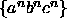 :
{
s --> as, bs, cs. as --> []. as, skip(X), xb --> [a], as, skip(X). bs --> []. bs, skip(X), xc --> xb, [b], bs, skip(X). cs --> []. cs --> xc,[c],cs.
Discontinuous Grammars [7] generalize and include both metamorphosis and extraposition grammars, by allowing for skips to be arbitrarily rearranged (or duplicated, or deleted) by a rewrite rule. They have been used in particular for implementing adaptations of Chomskyan theories [5]. Here is for instance a discontinuous grammar equivalent to the above extraposition grammar:
s --> as, bs, cs. as --> []. as --> xa, [a], as. bs --> []. xa, skip(X), bs --> skip(X),[b], bs,xb. cs --> []. xb, skip(X), cs --> skip(X), [c],cs.
In the first grammar, symbols such as xb can be considered as marks for b's which are being left-extraposed. In the second grammar, such marks can be seen as right-extraposed. While in this particular example our choice may just be a matter of personal preference, there may be naturalness reasons to prefer a right-extraposing formulation: some movement phenomena in natural language are more naturally viewed as right rather than left-extraposition, although they could perhaps be forced into left-extraposing formulations. Even when this forcing can take place, the resulting impossibility to distinguish between left and right movement creates some theoretical problems (e.g. in the more strict bounding of rightward, as opposed to leftward, movement- see [25]). There may also be efficiency reasons to prefer a right-extraposing formulation: in our implementation of DGs, the DG above works faster than the XG shown.
The need to refer to skipped substrings explicitly (whether in the XG original notation ''...", or in the DG notation skip(X)) can be avoided altogether when using Assumption Grammars, which handles movements through state changes defeasible upon backtracking.
Handling state information in Assumption Grammars is a special case of the general problem of cleanly and efficiently handling state information in declarative languages. We shall therefore examine this next, as well as the related problem of supporting backtrackable state changes.
The main problem is that expressing change contradicts some of the basic principles logic (and functional) languages are built on. By definition, `referential transparency' is lost when a given symbol denotes different objects within the same scope. It has been recognized, however, that this has limited impact on single-threaded data.
Data having a unique producer and a unique consumer are frequent in declarative programming languages. Work on linear types [35], monads [36] and linear language constructs [3] in functional programming has shown that single-threaded objects are subject to in-place update within a reasonably clean semantic framework.
In Prolog, the implicit arguments of DCG grammars correspond to a chain of variables, having exactly two occurrences each, as in a(X1,X4) :- b(X1,X2), c(X2,X3), d(X3,X4). We can see the chain of variables as successive states of a unique object. Clearly, no practical readability problems occur by collapsing such chains having exactly 2 occurrences of each variable. Arguably, reduced visual noise will compensate for keeping in mind that implicit state is passed from one literal to another, when this becomes simply: a :- b,c,d.
However, in the presence of backtracking, previous values must be kept for use by alternative branches. Although irrelevant to the user, for the implementor, this situation conflicts with possibility of reuse and makes single-threaded objects more complex in non-deterministic LP languages than in committed choice or functional languages. Our implementation described in subsection 9.1 solves this problem.
In functional languages like Haskell where, in a deterministic framework, elegant unified solutions have been described in terms of monads and continuations, `imperative functional programming' is used (with relative impunity) for arrays, I/O processing, etc. For non-deterministic logic programming languages like Prolog, the natural scope of declarative state information is the current AND-continuation as we want to take advantage of re-usability on a deterministic AND-branch in the resulting tree-oriented resolution process.
This suggests that we need the ability of extending the scope of a state transition over the current continuation, instead of keeping it local to the body of a clause. To achieve this our linear and intuitionistic assumptions will be scoped over the current continuation.
(C => G) :- assume(Scope,C), G, Scope='$closed'.It ensures, with an appropriate test at calling time, that assumption C is local to the proof of G
This framework will cover a fairly general form of backtrackable state information, which increases the expressiveness of a Prolog system while reducing visual noise due to useless argument passing. Our proposed Assumption Grammars will be derived as an instance of the framework.
We will give a short description of the primitive operations and point out some of the differences with other linear/intuitionistic logic inspired implementations.
Intuitionistic assumei/1 adds temporarily a clause usable in subsequent proofs. Such a clause can be used an indefinite number of times, like asserted clauses, except that it vanishes on backtracking. The assumed clause is represented on the heap.
Its scoped versions Clause=>Goal and [File]=>Goal make Clause or respectively the set of clauses found in File, available only during the proof of Goal. Clauses assumed with => are usable an indefinite number of times in the proof, e.g. a(13) => (a(X),a(Y)) will succeed.
Linear assumel/1 adds a clause usable at most once
in subsequent proofs. Being usable at most once distinguishes
affine linear logic from Girard's original framework
where linear assumptions should be used exactly once.
This assumption also vanishes on backtracking.
Its scoped version Clause -: Goal or [File] -: Goal
makes Clause or the set of clauses found in File
available only during the proof of Goal. They vanish on backtracking and
each clause is usable at most once in the proof, i.e.
a(13) -: (a(X),a(Y)) will fail. Note however, that
a(13) -: a(12) -: a(X)
will succeed with X=12 and X=13 as alternative answers, while its
non-affine counterpart
a(13) -o a(12) -o a(X)
as implemented in Lolli or Lygon, would fail.
or [File] -: Goal
makes Clause or the set of clauses found in File
available only during the proof of Goal. They vanish on backtracking and
each clause is usable at most once in the proof, i.e.
a(13) -: (a(X),a(Y)) will fail. Note however, that
a(13) -: a(12) -: a(X)
will succeed with X=12 and X=13 as alternative answers, while its
non-affine counterpart
a(13) -o a(12) -o a(X)
as implemented in Lolli or Lygon, would fail.
We can see the assumel/1 and assumei/1 builtins as linear affine and respectively intuitionistic implication scoped over the current AND-continuation, i.e. having their assumptions available in future computations on the same resolution branch.
Two `structural' rules, weakening and contraction are used implicitly in classical and intuitionistic logics. Weakening allows discarding clauses while contraction allows duplicating them.
In Wadler's formulation of linear logic (based on Girard's Logic of Unity) they look as follows:
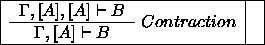
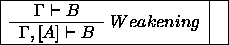
and do not apply to linear affine (<A>) assumptions but only to intuitionistic ones ([A]).
The restrictions on the weakening rule in linear logic require every (linear) assumption to be eventually used. Often, when assumptions range over the current continuation, this requirement is too strong, except for the well-known situation of handling relative clauses through the use of gaps [17]. On the other hand, affine linear logic allows weakening, i.e. proofs might succeed even if some assumptions are left unused.
We found our choice for affine linear assumptions practical and not unreasonably restrictive, as for a given linear predicate, negation as failure at the end of the proof can be used by the programmer to selectively check if an assumption has been actually consumed. It is also possible to check through the addition of a low-level primitive, that at a given point, the set of all affine linear assumptions is empty (cf. our first example in Section 7). This can be made invisible to the user to maintain declarativeness.
Although intuitionistic logic based systems like Prolog and linear logic implementations usually support quantification with the benefit of additional expressiveness, we have chosen (in compliance with the usual Horn Clause convention) to avoid explicit quantifications, for reasons of conceptual parsimony and simplicity of implementation on top of a generic Prolog compiler.
As linear assumptions are consumed on the first use, and their object is guaranteed to exist on the heap within the same AND-branch, no copying is performed and unifications occur on the actual clause. This implies that bindings are shared between the point of definition and the point of use. On the other hand, intuitionistic implications and assumptions follow the usual `copy-twice' semantics.
We will show the expressiveness of affine linear assumptions through an example a variant of which has been independently discovered by the creators of the logic language Lygon [38].
It is unexpectedly easy to write a linear implication based graph walking program. It will avoid falling in a loop simply because linear implication (-:) assumes facts that are usable only once (i.e. consumed upon their successful unification with a goal).
path(X,X,[X]). path(X,Z,[X|Xs]):-linked(X,Y),path(Y,Z,Xs). linked(X,Y):-c(X,Ys),member(Y,Ys). start(Xs):- c(1,[2,3])-:c(2,[1,4])-:c(3,[1,5])-:c(4,[1,5])-: path(1,5,Xs).By executing ?-start(Xs), we will avoid loops like 1-2-1 and 1-2-4-1 and obtain the expected paths:
Xs=[1,2,4,5]; Xs=[1,3,5]
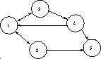
1: The graph with loops described by c/2
Note that the adjacency list representation of
the graph in fig. 1 ensures that each node
represented as a linear assumption c/2 becomes unavailable,
once visited. This makes our example simpler than the similar
program given in the Lygon distribution.
Note also that without weakening we would
have a hamiltonian walk  .
.
We will describe in this section how various forms of assumptions can be used for grammar processing conveniently described as an instance of hypothetical resoning.
Assumption Grammars are logic programs augmented with a) linear and intuitionistic implications scoped over the current continuation, and b) implicit multiple accumulators, useful in particular to make the input and output strings invisible.
As a more convenient notation, we shall use the following equivalences in the remainder of the paper:
*A:- assumei(A). +A:- assumel(A). -A:- assumed(A).
Hidden accumulators allow us to disregard the input and output string
arguments, as in DCGs, but with no preprocessing requirement.
They are accessible through a set of BinProlog built-ins,
allowing us to define a `multi-stream'
 construct,
construct,
dcg_phrase(DcgStream, Axiom, Phrase)
that switches to the appropriate DcgStream and uses Axiom to process or generate/recognize Phrase. We refer to [32] for their specification in term of linear assumptions.
For reasons that will become apparent later, we will also define, on top of these builtin assumptions, another type called timeless assumptions:
% Assumption: % the assumption being made was expected by a previous consumption =X:- -wait(X), !. % if there is no previous expectation of X, assume it linearly =X:- +X. % Consumption: % uses an assumption, and deletes it if linear =-X:- -X, !. % if the assumption has not yet been made, % adds its expectation as an assumption =-X: +wait(X).
With these definitions, assumptions can be consumed after they are made, or if the program requires them to be consumed at a point in which they have not yet been made, they will be assumed to be ''waiting" to be consumed (through ''wait(X)"), until they are actually made (at which point the consumption of the expectation of X amounts to the consumption of X itself). Terminal symbols will be noted as: #word.
An assumption grammar is a tuple 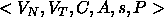 ,
where 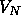 is as usual the non-terminal vocabulary, whose elements are
logic terms; 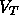 is the terminal vocabulary, whose elements are noted
#t, where t is a logic term; C and A are a set of logic program
calls 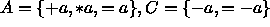 ,
where a is a logic term, and {all_consumed};
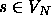 is the start symbol; and P are productions of the form:
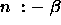 , where 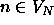 and  .
.
A sentence in the language defined by an assumption grammar is a sequence of terminals and (possibly empty) elements of A, which are obtained from the start symbol by successive application of production rules, where rule application amounts to rewriting in the case of terminals and non-terminals, as usual, whereas calls from A and C range over the current continuation and are such that elements in A are cancelled by matching elements in C, as follows:
Furthermore, a call to consume_all is satisfied if there are no calls left from A and C. Also, as in all Prolog grammars, Prolog calls are allowed in the right-hand side of assumption grammar rules.
We refer to Appendix II for an executable specification of the implicit argument based DCGs of this definition in terms of assumptions and to Appendix I for showing their equivalence to translation based DCGs.
The following AG for the language is basically the same as the DG shown in Section 2, but does not need to refer to skips explicitly. Markers are now treated as linear assumptions.
s:- as, bs, cs, all_consumed. as. as:- #a, +xa, as. bs. bs:- #b, -xa, +xb, bs. cs. cs:- #c, -xb, cs.
The predicate all_consumed is used to disallow any leftover assumptions. By defining
-- X :- \+ -X.a possible implementation for the present example is:
{
all_consumed:- -- xa, -- xb.
From the user's point of view, program-dependent definitions of all_consumed can be invisibly produced by compilation. For instance, for the example in the next section, the definition will be:
all_consumed:- --as, --bs,--cs.
Notice that a more declarative programming style results, in that we no longer need to refer to procedural notions such as left or right extraposition. If a marker xa has been assumed, then it can be consumed upon encountering a corresponding terminal symbol #b.
If we want our strings to retain the same number of a's, b's and c's, but in any order, we can use linear assumptions in a data driven formulation, as follows:
a:- -as, !. a:- +bs,+cs. b:- -bs, !. b:- +as, +cs. c:- -cs, !. c:- +as, +bs.
To query, we state for instance:
s:- +as, +bs, +cs, (b,a,c,b,a,c), all_consumed.
with s the start symbol of the grammar. Thus, we start with only one assumption for each of as, bs, cs. Encountering the corresponding terminal symbol (respectively, a, b, c) results in deleting that expectation. But if a terminal, say a, is encountered after its assumption has been consumed, this signals the need to expect a corresponding b and c to appear, so we add the assumptions : +bs, +cs. Therefore the input sequence itself triggers the firing of the rules. In other words, we achieve data-driven behavior. Notice that in order to achieve this data-driven flavor, terminals are used as pseudo-non-terminals, and we no longer note them as #t, but as t. String acceptance now reduces to satisfaction of the start state, which contains the input string as a goal.
Here is an even simpler AG formulation, also data driven:
a:- =bs. b:- =-bs, =cs. c:- =-cs. s:- (a,b,a,b,c,c), all_consumed.
The first assumption, bs, is used to match a's with b's, while cs matches b's with c's, to ensure the same number of each. Notice that by allowing weakening (i.e., by not requesting that all assumptions be consumed at the end) we can obtain a subset of the language, in which for instance the following query succeeds:
s:- (a,a,b,b).
The formal language examples presented suggest a very concise treatment of free word order, a problem that many languages exhibit to some extent. The problem is that since inflections rather than position are used to indicate case or grammatical function, position is used to indicate emphasis or focus, and almost any possible ordering becomes acceptable. For instance, the Sanskrit phrase ''Rama pashyati Seetam" (Rama sees Seetam) can also appear as:
pashyati Rama Seetam pashyati Seetam Rama Seetam Rama pashyati Seetam pashyati Rama Rama Seetam pashyati
This kind of free order of sister constituents, where each retains its integrity, is easily handled within discontinuous grammars, as shown in [7]. More interesting is the case in which even the contents of constituents appear to be scrambled up with elements from other constituents (e.g. as in Warlpiri [16, 21]. Even in Latin or Greek, phenomena such as discontinuous noun phrases, which would appear as extreme dislocation in prose, are very common in verse (and not unusual even in certain prose genres, e.g. Plato's late work, such as the Laws). A contrived example for Latin would be:
{
Puella bona puerum parvum amat. (Good girl loves small boy)
where the noun and adjective in the subject and/or object noun phrase may be discontinued, e.g.: {
Puella Puerum amat bona parvum.
In fact all 5! word permutations are possible, and we certainly do not want to write a separate rule for each possible ordering.
A DG formulation is shown in ([7]) in which the number of rules needed grows linearly depending on the number of constituents which can move freely. However, this formulation resorts of course to explicit naming and manipulation of skipped substrings. In AGs we can achieve a simpler and more efficient formulation:
amat:- -verb.
puerum:- =-noun(acc). % remove expectation of accusative noun
parvum:- =noun(acc). % expect accusative noun to match this adj.
bona:- =-noun(nom). % remove expectation of nominative noun
puella:- =noun(nom). % expect noun in nominative
with queries of the form:
s:- +verb, (bona,puella,puerum,parvum,amat).
We shall now illustrate how assumption grammars can deal with intersentential dependencies through the example of anaphora, in which a given noun phrase in a discourse is referred to in another sentence, e.g. through a pronoun. We refer to the noun phrase and the pronoun in question as entities which co-specify, since they both refer to the same individual of the universe.
As a discourse is processed, the information gleaned from the grammar and the noun phrases as they appear can be temporarily added as hypotheses ranging over the current continuation. Consulting it then reduces to calling the predicate in which this information is stored.
We exemplify the hypothesizing part through the following noun phrase rules:
np(X,VP,VP):- proper_name(X), +specifier(X). np(X,VP,R):- det(X,NP,VP,R), noun(X-F,NP), +specifier(X-F). pronoun(X-[masc,sing]):- #he. pronoun(X-[fem,sing]):- #her. anaphora(X):- pronoun(X). noun(X-[fem,sing],woman(X)):- #woman.
The linear assumption, +specifier(X), keeps in X the noun phrase's relevant information. In the case of a proper name, this is simply the constant representing it plus the agreement features gender and number; in the case of a quantified noun phrase, this is the variable introduced by the quantification, also accompanied by these agreement features.
Potential co-specifiers of an anaphora can then consume the most likely co-specifiers hypothesized (i.e., those agreeing in gender and number), through a third rule for noun phrase:
np(X,VP,VP):- anaphora(X), -specifier(X).
Semantic agreement can be similarly enforced through the well-known technique of matching syntactic representations of semantic types.
This methodology can of course be extended in order to incorporate subtler criteria. For instance, we can make each pronoun carry, at the end of the analysis, the whole list of its potential referents as a feature. User-defined criteria can then further refine the list of candidate co-specifiers, as in [12].
It is interesting to point out that in order to handle abstract co-specifiers [2], such as events or propositions, all we have to do is to extend the definition so that other parts of a sentence can be identified as possible specifiers as well. For instance, for recognizing ``John kicked Sam on Monday'' as the co-specifier of ``it'' in the discourse: ``John kicked Sam on Monday. It hurt.'', we can simply make the linear assumption that sentences are potential co-specifiers for pronouns of neuter gender.
Coordination (grammatical construction with the conjunctions ''and", ''or", ''but") has long been one of the most difficult natural language phenomena to handle, because it can involve such a wide range of grammatical constituents (or non-constituent fragments), and ellipsis (or reduction) can occur in the items conjoined. In most grammatical frameworks, the grammar writer desiring to handle coordination can get by reasonably well by writing enough specific rules involving particular grammatical categories; but it appears that a proper and general treatment must recognize coordination as a "metagrammatical" construction, in the sense that metarule, general system operations, or "second-pass" operations such as transformations, are needed for its formulation. Early attempts at such a general treatment [39, 4] were inefficient due to combinatorial explosion. A logic grammar rendition of coordination in terms of logic grammars [8] solved these inefficiencies through the addition of a semantic interpretation component that produced a logical form from the output of the parser and dealt with scoping problems for coordination. In the following example we show how the syntactic part of a metagrammatical treatment to coordination can be dealt with through AGs.
sent(and(S1,S2)):- s(S1), +and, s(S2).
% conjunction of two sentences- assumes that
% there will be an "and" between them.
s(S):- name(K), verb(K,P,S), np(P).
np(P):- det(X,P1,P), noun(X,P1),
=(ref_np(P)).
% keep it as potential referent for a missing np
np(P):- #and, -and,
% a conjunction appears where an np is
% expected: consume "and"
=-(ref_np(P)).
% consume an assumed (or to be assumed) np
% in lieu of the missing one
det(X,P,the(X,P)):- #the.
noun(X,cupboard(X)):- #cupboard.
name(tim):- #tim.
name(anne):- #anne.
verb(X,Y,built(X,Y)):- #built.
verb(X,Y,painted(X,Y)):- #painted.
For the sentence Tim built and Anne painted the cupboard, for instance, we obtain the semantic representation:
and(built(tim,the(X,cupboard(X)),painted(ann,the(X,cupboard(X)))
which is just what we intend in this simplified example. Subtler analyses can be implemented as in [12].
For reasons of efficiency we have implemented
BinProlog's AGs in C. They are
accessible through a set of builtins [30].
AGs do
not need to represent the chain of existential
variables (heap-represented on most WAMs)
introduced by the usual DCG and EDCG transformations.
Instead,
backtrackable destructive assignment implemented with
value trailing is used. The builtin #/1 working as the `connect' relation 'C'/3,
in DCGs, consumes trail-space only when a nondeterministic situation (choice-point)
arises. This is achieved by address-comparison with the
top of the heap, saved in the choice-point.
By `stamping' the heap with an extra cell inserted in the reference
chain to the value-trailed objects, further attempts
to trail the same address
will see it as being above the last choice point.
This actually results in constant heap/trail use for each chain,
only when a choice point is created, and no heap/trail
use otherwise.
is used. The builtin #/1 working as the `connect' relation 'C'/3,
in DCGs, consumes trail-space only when a nondeterministic situation (choice-point)
arises. This is achieved by address-comparison with the
top of the heap, saved in the choice-point.
By `stamping' the heap with an extra cell inserted in the reference
chain to the value-trailed objects, further attempts
to trail the same address
will see it as being above the last choice point.
This actually results in constant heap/trail use for each chain,
only when a choice point is created, and no heap/trail
use otherwise.
This is complemented with a very efficient, `if-less' un-trailing operation based on indirect address calculation. Despite the extra run-time effort, as #/1 actually uses a specialized instance of setarg/3, the overall performance of this run-time technique is fairly close to the static transformation based approach, even for plain DCGs, while offering multiple-stream functionality. We have also given emulated and native SICStus 2.1_9 figures (DCG-emSP and DCG-natSP) to show that performance is measured w.r.t a fairly efficient DCG processor (DCG-emBP).
The table 1 shows the comparative speed of AGs vs. DCGs on parsing all the well formed expressions of length N=4,5,6, for an arithmetic expression grammar.
Porting Assumption Grammars to a language which has global variables and backtrackable destructive assignment is easy. Here is the code for Wild-Life. Extending this to multiple dcg streams is straightforward.
global(dcg_stream)? dcg_def(Xs) :- dcg_stream <- s(Xs). dcg_val(Xs) :- dcg_stream = s(Xs). dcg_connect(X) :- dcg_stream = s([X|Xs]), dcg_stream <- s(Xs). dcg_phrase(Axiom,Xs) :- dcg_def(Xs), Axiom, dcg_val([]).
It is interesting to note that AGs promote both top-down and data driven thinking in the development of a grammar. We employed the latter in our ''data-driven" examples, i.e., those with rules in which a terminal symbol is the left-hand side symbol.
We can exploit the data driven thinking mode for AGs in order to emulate another interesting type of grammars: Link grammars [27].
A link grammar consists of a set of terminals (`words') each of which has a linking requirement. Planarity (links that do not cross can be drawn over the terminals ) and connectivity (all terminal of a recognized phrase can be linked) constraints should be satisfied for each terminal.
The linking requirements of each word are contained in a dictionary. A sample dictionary follows as an illustration:
words ¯formulas------ ------
a, the D+
ran S-
Mary, John O- or S+
chased S- & o+
snake, cat D- & (O- or S+)
The linking requirement for each word is expressed as a formula involving the operators & and or. The + or - suffix on a connector name indicates the direction (relative to the word being defined) in which the matching connector (if any) must lie.
The following diagram shows how the linking requirements are satisfied in the sentence ``The cat chased a snake''.
= 10cmcat.eps = 0pt
The translation into AGs is immediate, considering the representation of link grammar dictionaries shown in the previous section. Below, ''+" and ''-" have our AG meaning of linear implication and consumption respectively, but with this interpretation they happen to do exactly the same job as the link grammar shown above. All we have to do is to transform the + and - suffixes into prefixes, and add weakening for all predicates being assumed:
a:- +d. the:- +d. mary:- -o; +s. john:- -o; +s. chased:- -s, +o. snake:- -d, (-o ; +s). cat:- -d, (-o ; +s). all_consumed:- --s, --o, --d. s:- (mary,chased,a,snake),all_consumed.
Notice that AGs are descriptively more powerful than Link grammars because as in all logic grammars, their symbols can include arguments, through which we can, for instance, dynamically construct sentence representations as a side-effect of parsing. Conceptually, moreover, we can view AGs as enabling a rendering of link grammars in which the higher-order notion of retractable assumption replaces the more procedural notion of ''to the right" or ''to the left"
Another interesting result is that Assumption Grammars not only render the preprocessor for DCGs obsolete, but can remove the need for a preprocessor for more specialized types of logic grammars, e.g. Datalog grammars [10, , 9]. A much shorter interpretation mechanism than the original preprocessor, done in terms of Assumption Grammars, follows:
% CODE: defines advancement in Datalog `phrase' given as a set of % w/3 facts w(X):-dcg_val(From), w(From,To,X), dcg_def(To). % this recognizes a phrase From..To dlg_phrase(From,To):- dcg_def(From), axiom, dcg_val(To). % DATA: grammar axiom:-ng,v. ng:-a,n. a:-w(the). a:-w(a). n:-w(cat). n:-w(dog). v:-w(walks). v:-w(sleeps). % Input phrase in Datalog form w(0,1,the). w(1,2,cat). w(2,3,walks). % TEST ?-dlg_phrase(0,3). % will answer yes
Similarly, an Assumption Grammar can be made to work directly on top of file/stream-position information without requiring a special purpose preprocessor.
Existing work on Linear Logic based Natural Languages processing [17, 1] is mostly at sentence level, while ours covers text level constructs. This is made easy by using hypothetical assumptions which range over the current continuation, instead of locally scoped implications.
Compared with other Linear (Intuitionistic) Logic based systems like Lolli [18, 19], our constructs are implemented on top of a generic Prolog engine. We have chosen to allow weakening but not contraction for linear clauses. Explicit negation as failure applied to facts left over in a proof allows to forbid weakening selectively. We have also chosen to avoid explicit quantifiers, to keep the language as simple as possible. The semantics of our constructs is an instance of the sequent calculus based descriptions of Horn Clause Logic and the more powerful uniform proof based systems of [18]. We can see AGs and accumulator processing in general as an even more specific instance of linear operations.
To avoid passing extra arguments to predicates which do not use them, the accumulator preprocessor of Wild-Life 1.01 (based on EDCGs [34]) requires pred_info declarations saying which predicates make use of which accumulators. An advantage of Assumption Grammars, compared with DCGs and EDCGs is that no preprocessing potentially hiding the programmer's intent at source level is required. This becomes important for easier debugging and direct use of meta-programming constructs.
Also, previous linear logic based approaches to long distance dependencies force us to explicitly code the input and output string in every rule. By using Assumption Grammars we can restore high level expressiveness.
There are other analyses of free-word-order, besides that proposed here, that are also implementable using AGs e.g., using the Chomskyan notion of move-alpha. Move-alpha analysis of free-word-order are typical in Japanese [26, 20, 37]. In recent work, Tanaka uses free word grammars to `parse' electronic circuits and extract known components (transistors etc.) [29]. Equivalent assumption grammars can be used for this type of application as well.
There is some commonality between our approach to co-specifier resolution and the pronoun anaphora approach in the public domain LIFE natural language analyzer, but whereas the Life program is based on antecedence, we use the more general notion of cospecification [28]. Also, while the resolution process in the LIFE program is fixed within the grammar rules (pronoun resolution simply searches the temporally ordered list of potential co-specifiers for the first match on gender, number and semantic type), in our approach, although some matching constraints may be specified in the grammar rules, most are specified lexically. This allows a range of matching constraints and also permits matching on abstract entities.
It is interesting to note that Assumption Grammars provide us with yet another tool for resolving co-specification: the use of multiple accumulators. This approach was investigated in [12].
A recent logic grammar treatment of coordination [9] incorporates work on ellipsis which resorts to the idea of parallel structures [2, 15, 23], but unlike these approaches that stress semantic parallelism, it uses both syntactic and semantic parallelism, which can help to automatically determine what the parallel structures are, while the previous approaches can not. It would be interesting to transpose this whole approach to AGs.
Assumption Grammars, although theoretically no more powerful than previous logic grammars, have more expressive power in that they permit the specification of rewriting transformations involving components of a string separated by arbitrary strings with the sole resource of intuitionistic and (affine) linear assumption scoped over the current AND continuation. Implementation is immediate through BinProlog's intuitionistic and linear assumptions.
It was surprising to us to discover how directly link grammars could be expressed in AG terms. As well, this discovery motivated us to investigate the data driven mode of AG description, which in itself is another interesting development.
We have presented in a unique framework a set of fairly portable tools for hypothetical reasoning in logic programming languages and used them to specify some previously known techniques, such as Extended DCGs, which have been described in the past only by their implementation.
AGs are useful for writing various programming language processors (compilers, program transformation systems, partial evaluators etc.). They can contribute to the writing of compact and efficient code with very little programming effort.
Compared to previous frameworks based on Linear (Intuitionistic) Logic, ours is portable and runs on top of generic Prolog systems. This is a practical advantage over systems like Lolli or Prolog. Backtrackable destructive assignment, when encapsulated in higher-level constructs simplifies the use of DCGs while offering more powerful facilities in the form of hypothetical assumptions and multiple accumulators. This also reduces the need for explicitly imperative constructs like assert and retract in logic programming languages.
On the implementation side, further research is needed on inferring more, statically, about particular instances of linear and intuitionistic assumptions, which would allow very small overhead over classical statically compiled code. The combination of AGs and linear/intuitionistic assumptions is a practical basis for building semantically clean object oriented extensions on top of Prolog.
An obvious future application is to develop a more encompassing natural language processor using AGs, which incorporates all of the natural language features that were examined in isolation here.
We thank for support from NSERC (grants OGP0107411 and 611024), and from the FESR of the Université de Moncton. We also thank Andrew Fall for work reported in [13], summarized here in section 8.2.
BinProlog's WAM-level built-in accumulator based grammar processor can be seen as an alternative implementation of preprocessor based DCGs/Extended DCGs. By replacing each occurrence of '#'(X) with [X] and each occurrence of :- by -> in a each `AG grammar rule' its semantics will be unchanged.
x:- y,#a,z. x --> y,[a],z. y:- #b,#c. ==> y --> [b],[c]. ==> Prolog z:- #d,#e. z --> [d],[e].
Alternatively, the reverse translation is usable as a `DCG implementation', with #/1 a WAM-level built-in.
One can be see through the following meta-interpreter (which can be easily customized for either DCGs or the implicit accumulator based component of AGs), that the two are basically alternative implementations of the same abstract algorithm.
interp((A,B),S1,S3):-!,interp(A,S1,S2),interp(B,S2,S3).
interp(T,S1,S2):-terminal(T,X),!,connect(X,S1,S2).
interp(E,S,S):-empty(E),!.
interp({Goal},S,S):-!,Goal.
interp(H,S1,S2):-rule(H,B),interp(B,S1,S2).
rule(H,B):- '-->'(H,B). empty([]). connect(X,S1,S2):- 'C'(S1,X,S2). terminal([X],X).
rule(H,B):-clause(H,B). empty(true). connect(X,[X|S2],S2). terminal(#(X),X).
% creates and initializes a named `Extended DCG' stream ag_def(Name,Xs):-assumed(ag_state(Name,_)),!,assumel(ag_state(Name,Xs)). ag_def(Name,Xs):-assumel(ag_state(Name,Xs)). % unifies with the current state of a named `DCG' stream ag_val(Name,Xs):-ag_state(Name,Xs),assumel(ag_state(Name,Xs)). % equivalent of the `C'/3 step in Prolog ag_connect(Name,X):-ag_state(Name,[X|Xs]),assumel(ag_state(Name,Xs)). % EDCG equivalent of phrase/3 in Prolog ag_phrase(Name,Axiom,Xs,End):-ag_def(Name,Xs),Axiom,ag_val(Name,End). % file I/O inspired metaphors for switching between streams ag_tell(Name):-assumed(ag_name(_)),!,assumel(ag_name(Name)). ag_tell(Name):-assumel(ag_name(Name)). ag_telling(Name):-assumed(ag_name(Name)),assumel(ag_name(Name)). ag_telling(Name):-ag_default(Name). % projection of previous operations on default DCG stream ag_default(1). ag_def(Xs):-ag_telling(Name),!,ag_def(Name,Xs). ag_def(Xs):-ag_default(Name),ag_tell(Name),ag_def(Name,Xs). ag_val(Xs):-ag_telling(Name),ag_val(Name,Xs). ag_connect(X):-ag_telling(Name),ag_connect(Name,X). ag_phrase(Axiom,Xs,End):- ag_telling(Name),ag_def(Xs),ag_phrase(Name,Axiom,Xs,End). % syntactic sugar for `connect' relation, in BinProlog 5.75 notation #W:-ag_connect(W). % example axiom:-ng,v. ng:-a,n. a:- #the. a:- #a. n:- #cat. n:- #dog. v:- #walks. v:- #sleeps. ?-ag_phrase(axiom,Xs,[]). Xs=[the,cat,walks]; Xs=[the,cat,sleeps]; .............. Xs=[a,dog,sleeps]